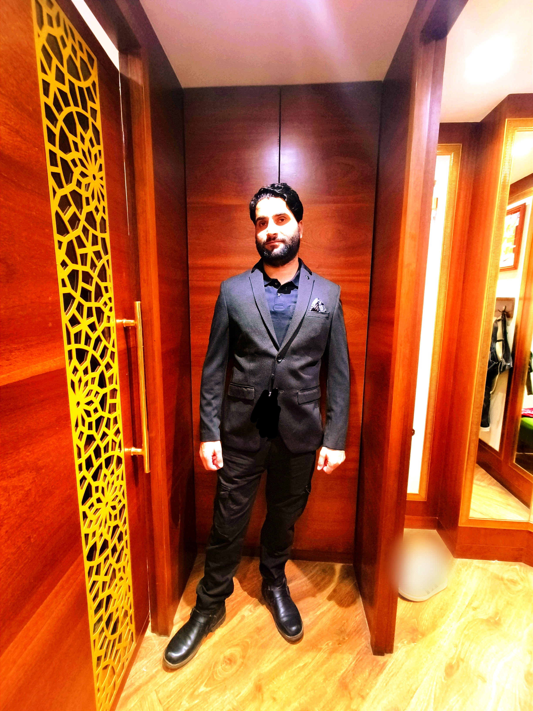

Hi, My name is Zubair
I am from beautiful valley of Jammu & Kashmir and i am a passionate

Work Experience

HTML Developer (2010-2012)
From 2010 to 2012, I worked as an HTML developer, creating visually appealing and easy-to-use websites.

Node.js Developer - Facebook (2012-2014)
From 2012 to 2014, I worked as a Node.js Developer at Facebook, building powerful and scalable applications using this popular server-side JavaScript framework.

HTML Developer - Instagram (2014-2015)
In 2014-2015, I had the opportunity to work as an HTML Developer at Instagram, where I focused on creating visually captivating and engaging web experiences for users of this popular social media platform.

HTML Developer - Twitter (2015-2016)
From 2015 to 2016, I served as an HTML Developer at Twitter, where I played a key role in crafting compelling and user-friendly web interfaces for this renowned social media platform. And i learn so much from ELON MUSK.
HTML Developer - Facebook (2016-2017)
In 2016-2017, I worked as an HTML Developer at Facebook, contributing my skills to the development and enhancement of user interfaces for this widely-used social media platform.and this was my dream company .
Software Developer - YouTube (2017-2023)
From 2017 to 2023, I had the privilege of working as a Software Developer at YouTube, where I played a crucial role in developing and maintaining the software infrastructure that powers one of the world's largest video-sharing platform